AQUA

Somos creatividad, somos Crae
Crae es un juego de cartas inclusivo donde personas videntes, no videntes y con discapacidad visual pueden participar y disfrutar en conjunto.

¿Cómo jugar?
Crae posee una modalidad de juego definidas pero siempre apoyamos la creatividad y que crees tus propias reglas y modalidades.
1
Uno de los jugadores hace de “creativo” en cada uno de los turnos. Observa sus 6 cartas de la mano y, de una de ellas, debe construir una frase, palabra o sonido y decirla en voz alta (sin mostrar la carta a los otros jugadores). La frase puede ser inventada o puede estar inspirada en la poesía, literatura, cine, etc.

2
Comenzamos el juego de izquierda a derecha. Selecciona una carta que inspire tu frase y dila en voz alta. El resto de jugadores seleccionará de entre sus cartas la que mejor se adapte a la frase construida por el creativo.

3
El objetivo de los jugadores es adivinar cuál de las cartas es la que el creativo usó para construir su frase. Cada jugador vota de forma secreta la carta que cree que pertenece al creativo. Para ello, coloca boca abajo frente a él un objeto que hayas escogido previamente.

4
- Si todos los jugadores aciertan la carta del creativo, todos los jugadores excepto el creativo ganan 2 puntos.
- En cualquier otro caso, tanto el creativo como los jugadores que hayan acertado, obtienen 3 puntos.
- Todos los jugadores ganan un punto por cada voto que reciba su carta.

5
>Cada jugador roba cartas hasta tener 6 en su mano. El juego termina cuando se roba la última carta. El jugador que más lejos haya llegado en la escala de puntuación es el ganador.

Apóyanos
Por favor, si quieres ayudarnos económicamente, no dudes en donar en Kickstarter. Así financiarías nuestro proyecto y contribuirías a cumplir este gran sueño.
Sobre nosotros
Somos Aqua, un equipo que apuesta por la inclusión, principalmente por las personas no videntes o de visibilidad reducida.
Creemos que la diversión no debe distinguir condiciones físicas es por eso que desarrollamos “CRAE”, el cual busca ser un juego de cartas inclusivo donde personas videntes o no videntes pueden participar y disfrutar en conjunto.
Puedes encontrarnos en Instagram como @crae.cl o llamarnos a nuestro número telefónico 9 7889 4758.


AQUA